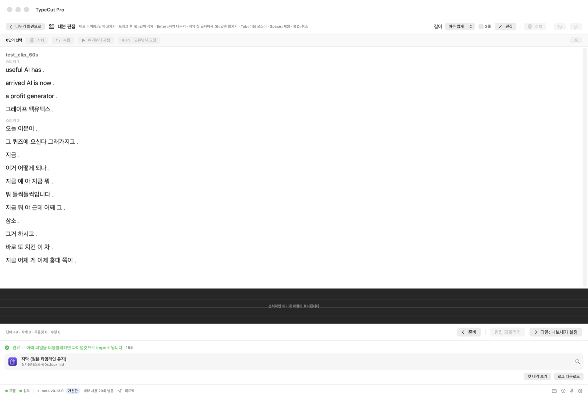
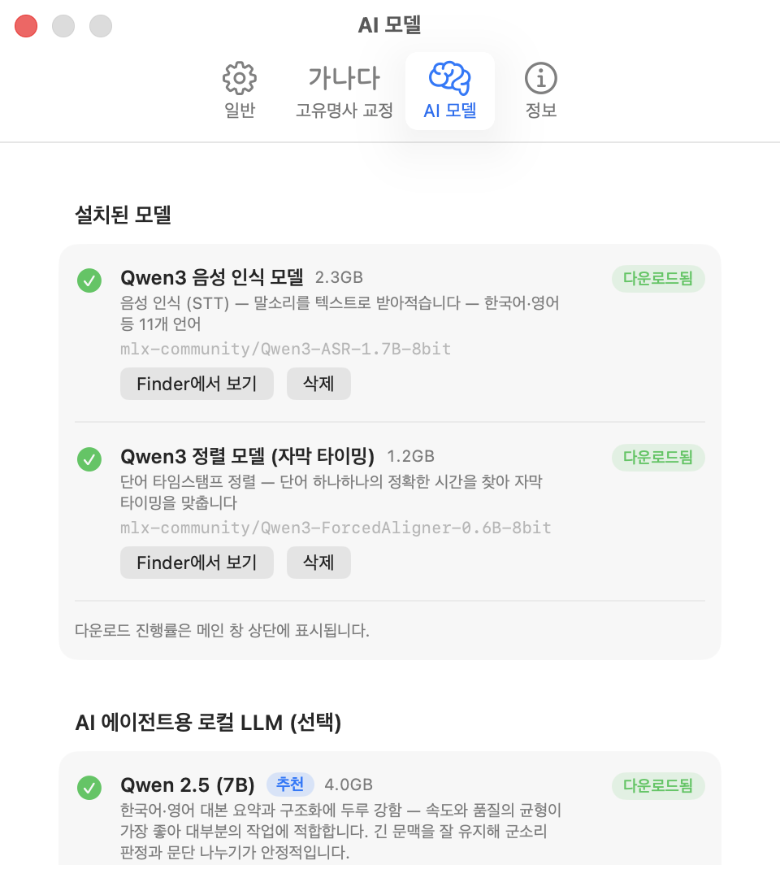

Transcript Editor
📝 대본 편집기 — 영상을 '글'처럼 편집
편집기는 처음부터 상시 열려 있습니다. 분석 중에는 뷰어 위 진행 상태를, 완료 후에는 하단 결과를 보여줍니다. 대본을 읽으며 필요 없는 부분을 지우면 그 구간이 타임라인에서 잘려 나오고, 모든 편집은 ⌘Z로 복원됩니다.
문서처럼, 키보드만으로
- 드래그 선택 · 클릭 재생 · 더블클릭으로 단어 즉시 수정
- 지우면 잘린다 — 재생 시 삭제 구간 자동 스킵
- 방향키 자유 커서 · 백스페이스 연속 삭제 · ESC 편집 탈출
- Space = 커서 위치부터 재생, 파형 클릭 시 글도 따라 스크롤
- 무음컷·군소리 삭제 일괄 버튼

💬 집중 대본 뷰 — 글에만 몰입해 다듬기
- 전체보기로 뷰어와 인스펙터를 숨겨 넓은 문서처럼 편집
- Enter = 커서에서 자막 나누기 · 자막 첫 글자에서 ⌫ = 앞 자막과 합치기
- 툴바에서 자막 길이 + 2줄 토글을 바로 조절
- Tab = 다음 군소리 · Space = 커서 위치부터 재생

🤖 AI 에이전트 — 말하면 대신 편집
텍스트는 절대 바꾸지 않고 필요한 부분만 잘라내며, 결과는 언제든 검토·복원할 수 있습니다.
- 요약 & 발췌 — "핵심만" · "5분으로" · "매출 얘기만 남겨줘"
- Google SEO 구조 정리 — H2·H3 목차 생성, 섹션 통째 삭제
- 구두점 넣기 — 마침표·물음표·쉼표를 명문화된 규칙대로
- 기본은 오프라인 — 원하면 OpenAI·Gemini·Claude API 키 연결
